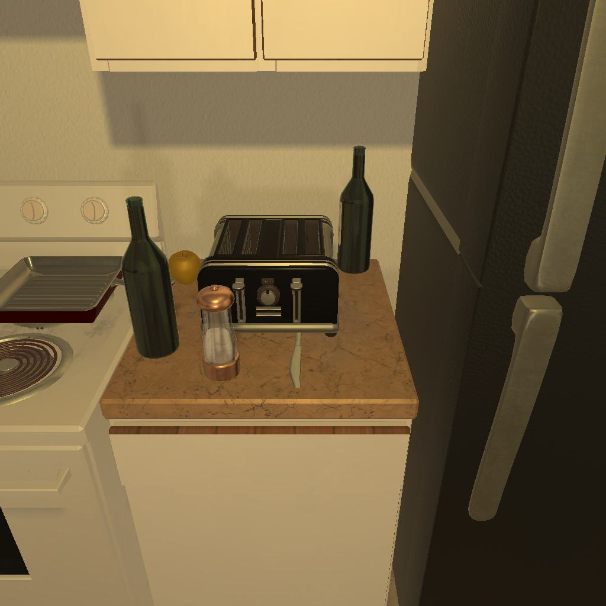
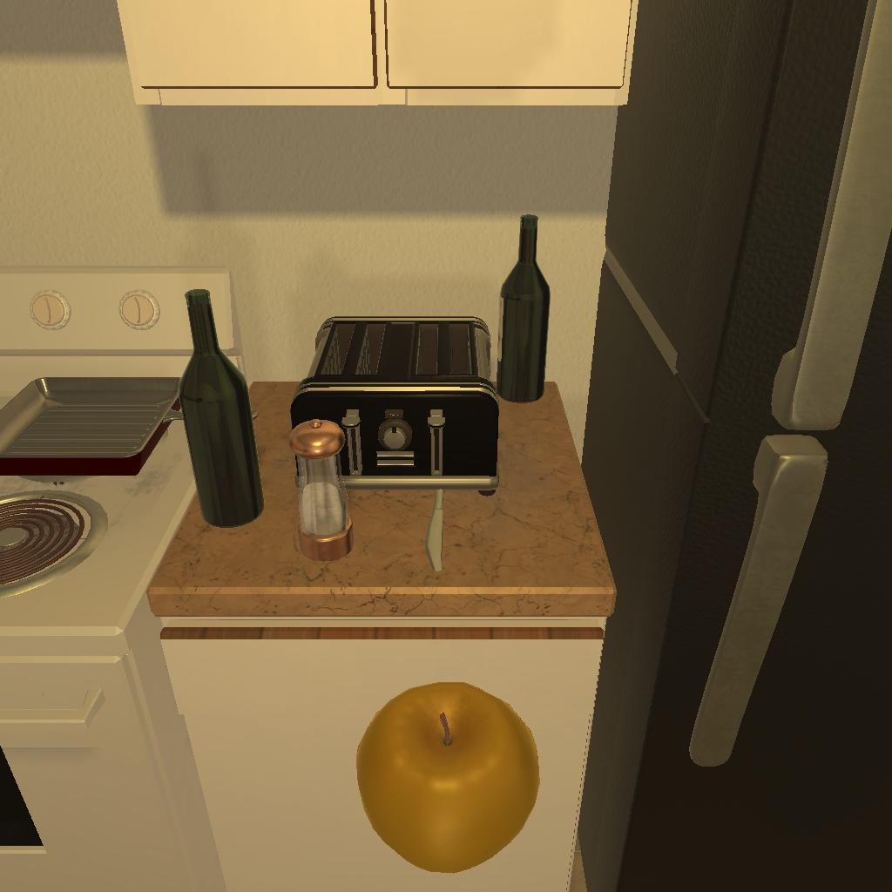

---------------------------------------------------------task: 14---------------------------------------------------------
--------------------------------------------------------------------------------------------------------------------------------------------------------------------
--------------------------------------------------------------------------------------------------------------------------------------------------------------------
Step:--------------------------------------------------------------------------4-------------------------------------------------------------------------------
----------------------------------------
VLM Prompt:
Image1:
Image2:
**Instruction**
1. Analyze the provided images to identify all visible household objects and compare the difference between images (e.h. whether the object is opened or not and taken on hand or not), focusing on those relevant to the task description "put a cool apple in countertop."
2. Use the analysis of images and the task hint "The agent must find an object of the desired type, pick it up, go to a fridge, cool the object with the fridge, then find the correct location to place it, and put it down there. The agent does not need to use the fridge button or open the fridge to cool the object, and the agent just needs to do action that is "cool the object with the fridge"." to answer the question: what is the most reasonable action in the choices for the task description "put a cool apple in countertop"?
3. Decide and write the answer using the template: The answer is: (i): , where i is the real number. If there is no desired object in images, search every place based on **Initial Observation** to find the object. And if no one is exactly correct, choose a similar answer.
**Initial Observation**
You are in the middle of a room. Looking quickly around you, you can see microwave (1), countertop (1-2), cabinet (1-11), diningtable (1), drawer (1-3), sink (1), sinkbasin (1), toaster (1), stoveburner (1-4), fridge (1), coffeemachine (1), garbagecan (1)
**Answer Choices**
(1): go to microwave 1
(2): go to countertop 1
(3): go to cabinet 1
(4): go to diningtable 1
(5): go to drawer 1
(6): go to sink 1
(7): go to cabinet 2
(8): go to cabinet 3
(9): go to sinkbasin 1
(10): go to cabinet 4
(11): go to cabinet 5
(12): go to drawer 2
(13): go to toaster 1
(14): go to cabinet 6
(15): go to stoveburner 1
(16): go to cabinet 7
(17): go to fridge 1
(18): go to stoveburner 2
(19): go to stoveburner 3
(20): go to stoveburner 4
(21): go to drawer 3
(22): go to cabinet 8
(23): go to cabinet 9
(24): go to cabinet 10
(25): go to coffeemachine 1
(26): go to cabinet 11
(27): go to garbagecan 1
(28): put apple 1 in/on countertop 2
(29): examine apple 1
(30): examine countertop 2
**Answer**
Let's think step by step by following the instructions.
----------------------------------------
----------------------------------------
Original Response:
First, we analyze Image1 and Image2. In both images, we can see a countertop, a toaster, two wine bottles, a salt shaker, a pepper shaker, and a fridge. The difference between the images is that in Image1, there is an apple on the countertop, and in Image2, the apple is no longer there, indicating it has been taken.
The task description is "put a cool apple in countertop." Based on the initial observation, the agent is in a room with various household objects, including a fridge. Considering the task hint, the agent must find an apple, cool it with the fridge, and place it on the countertop. Since we have identified an apple on the countertop in Image1 and it is missing in Image2, we can assume the agent has already picked up the apple. The next step would be to cool the apple with the fridge.
The answer is: (17): go to fridge 1. This is because, according to the task hint, the agent does not need to use the fridge button or open the fridge to cool the object; they just need to go to the fridge to perform the action of cooling the object. Once the apple is cooled, the agent can then put it down on the countertop, which would be action (28): put apple 1 in/on countertop 2. However, since the question asks for the most reasonable next action for the task, and the apple has already been picked up, the correct choice is to go to the fridge to cool the apple.
----------------------------------------
----------------------------------------
>>> Refine Original VLM Response and Get Pure Action: go to fridge 1
----------------------------------------
-----------------------------------------------------------------
Running time: 11.181370735168457 seconds
Total Money: 6.316120000000003
-----------------------------------------------------------------
-----------------------------------------------------------------
Text Observation:You arrive at loc 17. The fridge 1 is closed.
-----------------------------------------------------------------
UNSUCCEED